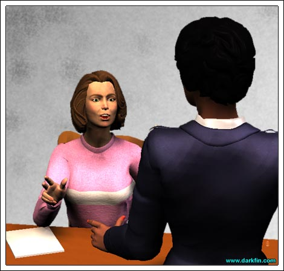
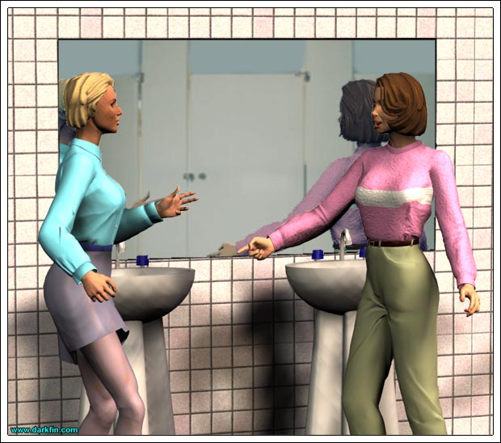
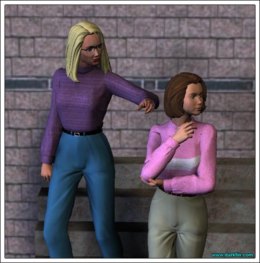

Detective 1 Alright, Ms. McBride, we need to go over your story one more time...
Morrigan (Slumping in her chair) That's what you said the first two times...
Detective 1 We need to make sure that everything is in sync... and that your story doesn't change
Morrigan (Bristling) I'm a professional journalist, detective, as well as the daughter of an LAPD commander - I always get my facts straight before I commit to them
Detective 1 (Rolling her eyes at her partner) Right
Morrigan Hey, I am doing you both a favor by talking to you without a lawyer present because I know I didn't do anything wrong - so, if you're done with the haughty facial expressions, shall I start from the top?
Detective 1 I'm not sure I'm liking your tone, ma'am
Morrigan And what tone would you prefer? - the "I'm so happy to be accused of murdering a priest" timbre or the "whatever you say, almighty officer" cadence?
Detective 2 Ms. McBride, temper your sarcasm and please tell us about your activities for the evening?

Morrigan As I said before, after getting off of my shift at KCON... 6:30... I went to see that new sci-fi movie at the cineplex with five of my friends - you have their names and telephone numbers, they can vouch for me - after it was over at 8:50, we all went to dinner at the Mama Toni's Pizza Parlor across the street - I stayed there for approximately 45 minutes until Hector Tapia called and asked me to meet him at the church
Detective 2 Saint Brendan's?
Morrigan Yes, Saint Brendan's
Detective 1 (Banging her pen against the desk) I was going to see that new sci-fi movie tonight... but I got called in here!
Morrigan You didn't miss much
Detective 1 (Growling) That's for me to decide
Detective 2 Why did Mr. Tapia want you to meet him?
Detective 1 And if the reason is sexual in nature, you will have to provide exact details
Detective 2 Shouldn't be too hard for a "writer"
Morrigan I am two seconds away from filing a report against you two
Detective 1 (Throwing her a pad of paper) Ooh, be our guest!
Detective 2 No one is really going to care about what you have to say, Ms. McBride - a priest was killed earlier this evening - that's not going to sit well with most people in this town
Detective 1 And you just handed your own head over to us on a silver platter... pardon the biblical pun
Morrigan If you two would stop the comedy routine and do your jobs right, you would see that I'm only trying to help while the real killer is still out there
Detective 2 OK, OJ
Detective 1 (Taking a bite of an onion bagel) We'll see what we can do
Morrigan I want to speak to your captain, right now - you two are embarrassments to your profession!
Detective 1 (Grabbing Morrigan by the collar and deliberately breathing on her) This ain't your daddy's department, little girl
Detective 2 Get used to our faces, Ms. McBride, because we are the only two you're going to be dealing with here - now, I suggest you make it easier on yourself and resume your story... why were you going to meet Hector Tapia?
Morrigan (Glaring at both of them) He wanted me to meet his sister, Carmen Fiore - he thought she would be a helpful source for a future story I'm doing for KCON
Detective 1 What's the story about?
Morrigan I'm not at liberty to say
Detective 2 And why is that?
Morrigan It's going to be an expose and it's still in the nascent stages - discussing it now... with anyone... would jeopardize the entire process
Detective 1 Missy, you have a lot more at stake here than losing a story
Morrigan I am well aware of that, detective... and my name is "Morrigan" - but I am also aware of my rights under the law - I do not need nor do I wish to discuss the subject of my story as it applies to this investigation
Detective 2 (Flipping his pen in the air and catching it) We'll find out about it, one way or the other
Morrigan The only thing you need to know is that I went to Saint Brendan's with the intention of meeting Mr. Tapia for strictly business purposes
Detective 2 A man with a known criminal past
Morrigan Emphasize the word "past," please
Detective 1 How about you emphasize your ass!
Detective 2 (Holding back his partner again) And you did see Mr. Tapia?
Morrigan Yes... briefly - by the time I arrived at the church, the pizza from earlier was not setting right on my stomach so I asked if we could reschedule...
Detective 2 It was awfully late to be meeting him there in the first place, wasn't it, Ms. McBride?
Morrigan Ordinarily, yes, but tonight was an inter-parish meeting - they usually last well past 10:00 pm
Detective 1 Did Mr. Tapia watch you leave?
Morrigan Yes, he did - I drove off to go home
Detective 1 You took the back streets instead of the freeway, why?
Morrigan I'm not a fan of driving freeways after dark, I prefer surface streets
Detective 2 (Looking at a map on the wall) You live on Willowbrook, correct?
Morrigan That is correct
Detective 2 The church is a good 20-minute drive on surface streets when you could've been home in 12 using the freeway
Morrigan True
Detective 1 For someone who was supposedly sick to her stomach, you weren't in a real hurry to get home?
Morrigan Like I just said, I do not like to drive the freeways after dark - the extra eight minutes was not going to help or hurt my stomach
Detective 2 And during this time is when you had the accident with Erika von Meer?
Morrigan Yes
Detective 1 Why didn't you report it?
Morrigan It was both of our faults - there was only minor damage - we didn't see the need to involve our insurance companies
Detective 1 (Smug) Well, as the daughter of an LAPD commander, you should have known better!
Morrigan (Gritting her teeth) Look, it's late, I'm tired, sick, and Dr. von Meer had to get to her lab tests...
Detective 2 You insisted on driving her, why?
Morrigan Her glasses were damaged and she couldn't see well enough to drive in my opinion - so I offered her a ride and she accepted it
Detective 1 Heh, now was this sexual in nature?
Morrigan (Angrily pointing) YOU ARE A DISGRACE
Detective 2 ANSWER THE QUESTION, MA'AM
Morrigan NO - I was trying to be helpful...
Detective 1 Like you're trying to be now?
Morrigan You know, on second thought, I think I do want a lawyer
Detective 2 We spoke to a few of your co-workers already...
Morrigan "To" or "with?" - it makes a difference
Detective 2 (Ignoring her comment) A Ms. Takanachi said she talked to you by phone after the shooting
Morrigan While I was driving Dr. von Meer to her destination, Gracie called me and told me about what happened
Detective 2 (Looking at his notes) According to Ms. Takanachi, she tried to call you several times before, but you did not answer - why?
Morrigan I had my cell voicemail on, I was not feeling well
enough to talk to anyoneDetective 1 Why did you pick up this time?
Morrigan Erika suggested that I should
Detective 1 And why is that?
Morrigan (Agitated) I DUNNO, the ringing pissed her off, you'll have to ask her!
Detective 2 So, now you two are heading back towards the church?
Morrigan Yes, I was only a few minutes away, I wanted to see what was happening
Detective 2 Why? - you weren't working that assignment for the station
Morrigan It's my church and I had just left shortly before - I was concerned for Hector... Mr. Tapia
Detective 1 And Ms. von Meer was fine with your little detour?
Morrigan I asked her if it would be alright and she had no problem with it
Detective 2 So, you arrive back at Saint Brendan's - do you remember the precise time?
Morrigan No, I was too busy trying to get through the pandemonium to look at my watch
Detective 2 Then what happened?
Morrigan In the course of talking with people, I noticed
you, detective, holding up a gun in a plastic bag to Frank Fiore... I instantly recognized it as mineDetective 2 You were absolutely certain it was yours?
Morrigan Yes, the distinctive grip was handmade by my father - I knew right away
Detective 1 (Aside) I've seen better grips
Morrigan (Overhearing) LOOK, detectives - if I wanted to kill someone, why would I admit in front of everyone that that was my gun?
Detective 1 Twisted logic is par for the course in most of these cases
Morrigan And why would I leave it behind?
Detective 2 Maybe you heard someone coming and dropped it by accident - a lot of reasons...
Detective 1 Maybe God told you to do it
Morrigan Heh, I resent that remark, detective - I am a devout Catholic, I've been a member of this church for less than a year, what motive could I possibly have for wanting to kill Father Greg?
Detective 1 That's what we're going to find out, Ms. McBride, I can assure you
Morrigan (Sighing) It's so obvious I am being framed here! - why can't you see that?
Detective 2 Have you ever used your gun?
Morrigan I used it all the time in Montana - going to the firing range was often times the highlight of my weekend
Detective 2 What about here in town?
Morrigan I haven't had the time to do so since I moved to Duquesa Bay
Detective 1 Things have been pretty hectic for you lately?
Morrigan You could say that
Detective 2 So, you lost your gun when your first moved out here?
Morrigan I didn't lose it... it was taken from me
Detective 1 By the Tooth Fairy?
Morrigan By a California Highway Patrol officer
Detective 2 Same difference
Morrigan It was taken by an Officer Baten
Detective 2 There's no record of any officer by that name
Morrigan Gracie Takanachi and the tow truck driver will back me up on this - the night I first arrived in town, my car broke down, I decided to stay where I was and go for help in the morning - I kept the gun by my side for protection - a few hours later, I woke up to find Gracie, the tow truck driver, and Officer Baten standing outside of my car - the officer took the gun from me since the car was being towed and I had to go directly to work that day
Detective 2 And you never went back to claim it?
Morrigan Between the chaos of the move, my new job, and various other incidents, it slipped my mind - when it finally occurred to me to retrieve it, I called CHP HQ and was given the run around... I called from KCON, pull the phone records if you don't believe me
Detective 2 We know how to do our jobs, ma'am
Morrigan That's debatable!
Detective 1 What is your relationship to Erika von Meer?
Morrigan Excuse me? - I've told you three times now why she was in my car
Detective 1 Yes, but what is your personal relationship to her?
Morrigan I don't understand what you're trying to get at?
Detective 1 Is it true that you're dating her brother, KJ von Meer?
Morrigan (Rubbing her head) Yeah - I told you that he was one of the friends I was with earlier this evening
Detective 2 How long have you two been dating?
Morrigan For a few months
Detective 1 Would you call it serious?
Morrigan (Folding her arms) I'd call it dating
Detective 1 Would you call him your boyfriend?
Morrigan I still don't see the relevance here?
Detective 1 Maybe your "car accident" happened last night... or last week
Morrigan What are you trying to say?
Detective 1 (Leaning on the table again) That the sister of your boyfriend wouldn't hesitate in covering up for you!
Morrigan (Standing up) OH, C'MON - I don't know Erika von Meer as well as her brother but I highly doubt she'd cover for me if she thought I was jaywalking, let alone plotting the murder of a priest!
Detective 2 Were there any witnesses to your accident tonight?
Morrigan None that I'm aware of but it did take place in a residential area - someone might have seen us out there when it happened
Joenne Fresh Kona Blend, detectives!
Joenne (All smiles) I just finished typing up your reports and the FedEx package you were expecting arrived a few minutes ago
Detective 2 (Leering at her body) Thanks, Joenne, we're about through in here
Joenne (Turning to face Morrigan) Oh, and Ms. McBride - you were asking me earlier about the restroom - it's down the hall and to your left when you're ready
Morrigan Uh... thanks
Detective 2 Ahem... right now, we don't have enough to charge you, Ms. McBride, but I wouldn't be making any out-of-town plans
Detective 1 And get in touch with that attorney because you're going to be seeing a lot more of us!
Morrigan (Heading for the door) I'll be sure to do that
Joenne Did you mention me?
Morrigan What do you think?
Joenne Keep your mouth shut about what went down between us earlier and my supervisors will try to help you out the best they can

Morrigan And if I don't?
Joenne Pray that they have cable in the prison they send you to
Morrigan The way this case is shaping up, Joenne, I might need you to testify on my behalf
Joenne Sorry, Morrigan, you're on your own - the agency won't
jeopardize my cover for thisMorrigan You seemed more than eager to help me out earlier
Joenne The Clergy is behind setting you up - you do realize this?
Morrigan How do I know that, because YOU say so? - you told me not to go into the church because my life was at risk, the next thing I know, a priest is killed and I'm the number one suspect - WHO KNOWS, maybe your CIA goons are setting me up, I can't trust anyone!
Joenne (Serious look) Be prepared, the detectives will find matching powder burns on your hand
Morrigan (Leaning against the tile) Oh, I'm sure they will,
they'll probably conjure up some kind of problem between me and Father Greg as wellJoenne You have a lot of powerful enemies in this town lining up to play puppet master with you, Morrigan
Morrigan And where do your strings lead to, Ms. Mirabello?
Joenne Not to The Clergy... if you weren't valuable to these hooded freaks, you would have been dead the second you crossed city limits
Morrigan Why am I so valuable to them?
Joenne It's a puzzle I've been trying to solve for a long time - just know that they need you out of the way... but they also need you alive
Morrigan (Running her hands under the cold water) That's reassuring
Joenne If you have any other questions I can assist you with, please don't hesitate to call the office - have a good evening and I'll be in touch!
Morrigan (Watching her leave) Thank you so much!
Erika This is not going well
Morrigan I appreciate your help, Gracie - we really have to find that tow truck driver and the mysterious Officer Baten because the police will say you're not a credible witness being my friend and co-worker... no, my car has been impounded, KJ is inside trying to argue on my behalf but it won't do any good - someone is hell bent on seeing me take the fall for this - no, I do NOT want to involve my dad yet... that's OK, KJ will give me a ride home - I know, I'm guessing I'll be suspended from KCON next - we'll meet up tomorrow, tell Zach I'll need him to call in his contacts - right now, I've got to get home and get some rest before I fall over... thanks, goodnight

Morrigan (Sighing) I doubt your magic wand can rescue me from this mess
Erika Is everything alright, Ms. McBride?
Morrigan Oh, it's you, Dr. von Meer - you startled me
Erika I apologize... and please call me Erika, we've known each other long enough now
Morrigan I suppose we have - how's your eye?
Erika It's fine... did I hear you mention a "magic wand?"
Morrigan Um, just talking out loud
Erika To an invisible wizard?
Morrigan (Half smile) That's one way of describing her
Erika Morrigan... I want you to know...
Morrigan What?
Erika I'm going to do everything I can to clear your name
Morrigan Just tell the truth and everything will be alright
Erika It doesn't always work out that way
Morrigan No, but I have to have faith that it will
Morrigan Did the dicks take your statement?
Erika Pardon me?
Morrigan The detectives
Erika Yes, I echoed everything you said - and I'll say anything else you want me to say
Morrigan No, that will NOT be necessary
Erika It might be... and it might be necessary for you to leave town for awhile - my family has a cabin in...
Morrigan NO... THANK YOU - I do not run from a fight, especially one that is unjust
Erika You need to learn to pick your battles
Morrigan And you need to get to a hospital for that eye, the cut is still bleeding
Erika (Backing away) I'll take care of it when I get home
Morrigan KJ will be here in a minute to drive us
Erika It's now my turn to ask... do you need to see a doctor?
Morrigan No...
Morrigan Nothing a few empty robes and a cold soak won't cure